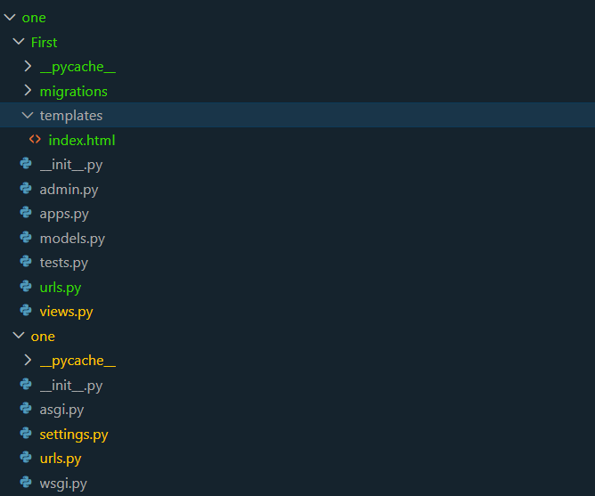

To create views one must first create an app. To do this refer to the procedure below
Go to the views.py to write views. Views pass on request and get responsse. This is the basic function of a server. A view must always take in a request and return a response object. Either a redirect or a render or a Httpresponse object.
An example while using htto response is done below

Remember writting the viewss is part of the pie. In order to display it we need to redirect it from the urls.py folder
urls.py only create the channels to get the page
To create urls one must first go to the urls.py file in the app folder.
Then import the views from the views.py file.
After that create a list of url patterns and map them to the views created in the views.py file.

Finally go to the main(one) urls.py file in the project folder and include the app urls.py file.Also you have to import include from django.urls
Now run the server and go to the browser to see the result

Great now we have a working Django application!
To create templates one must first create a folder named templates in the app folder.
Then create an HTML file inside the templates folder.Name it indx.html
Finally, in the views.py file, use the render function to return the template.

Next is to update the urls with the new changes of the new function

To render you must make the settings.py recognize the template and the app so add the app among the installed app

Now run the server and go to the browser to see the result

Great now we have a working Django application with template rendering!
if you have any question please contact me via the link below
Contact Me